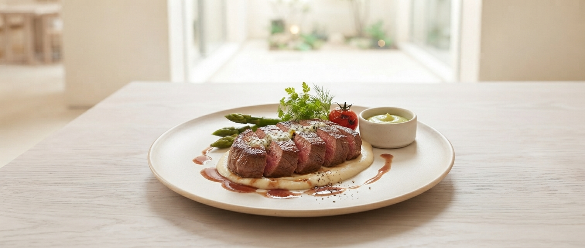
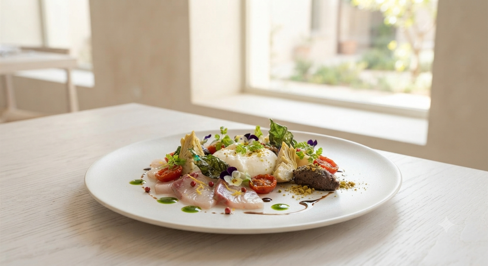
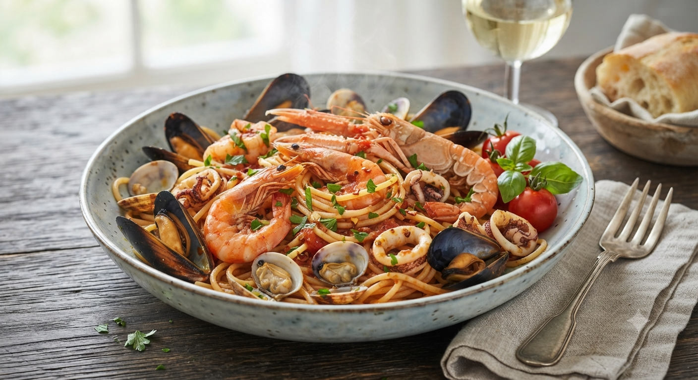
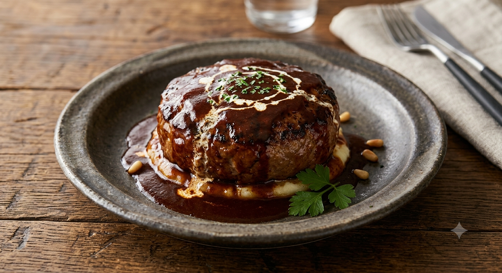
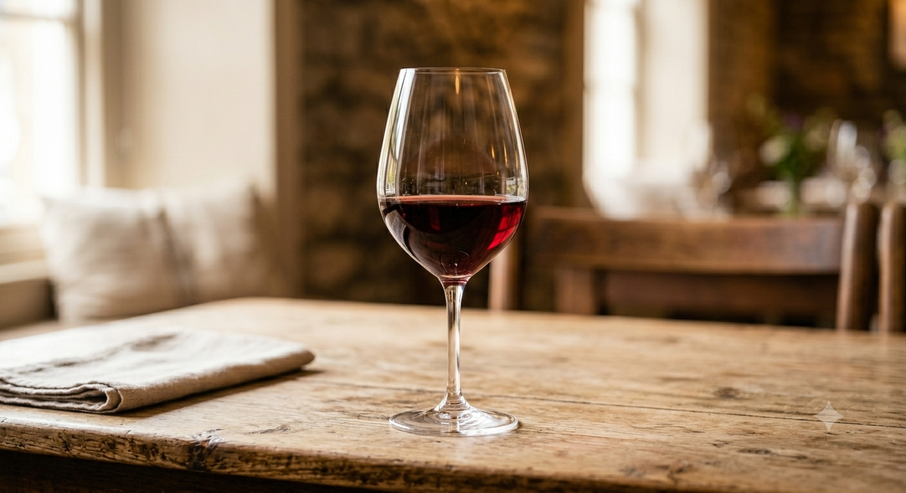

白金豚のトマホークソテー
花巻産「白金豚」を大胆な骨付きで。きめ細やかな肉質と、芳醇な脂の甘みが口いっぱいに広がります。

盛岡のランドマーク「monaka」2階に佇む、大人の隠れ家。
花巻産白金豚、岩手短角牛、そして三陸から届く海の宝石たち。
素材本来の力強い味を、ナチュールワインと共に。
私たちは、岩手の「今」を最も美味しく表現します。

三陸沖で獲れた新鮮な海老、帆立、ムール貝を贅沢に使用。魚介の旨味が凝縮された濃厚なソースが、アルデンテのパスタに絡みつく、当店の顔とも言える一皿です。潮の香りとトマトの酸味が織りなすハーモニーをお楽しみください。
Specialty of the House

花巻産「白金豚」を大胆な骨付きで。きめ細やかな肉質と、芳醇な脂の甘みが口いっぱいに広がります。

肉本来の力強さを追求し、つなぎを一切使わない肉100%の仕上がり。噛むほどに赤身の旨味が溢れます。

世界各国から選び抜いたナチュールワイン。料理一皿ひと皿に寄り添う、最適なマリアージュをご提案。
より特別なひとときをお届けする、シャトンの新しい取り組み
誕生日や結婚記念日、大切な方の門出を彩る専用ディナーコースをご用意。シェフ特製のデザートプレートメッセージのほか、花束の手配や記念写真プレゼントなど、心に残る演出をお手伝いいたします。
「種類が多くてどれを選べばいいか分からない」という声にお応えし、お選びいただいた料理やお客様のお好みに合わせた極上のペアリングコースを導入。「ワイン選び」の不安を解消し、料理との相乗効果をお楽しみいただけます。
Reservation by Phone
019-653-0234Latest Information
Instagramをフォロー
〒020-0871 岩手県盛岡市中ノ橋通1丁目6-8
モナカ 2階（旧盛岡バスセンター跡地）
Lunch 11:00-15:00 / Dinner 17:30-21:00